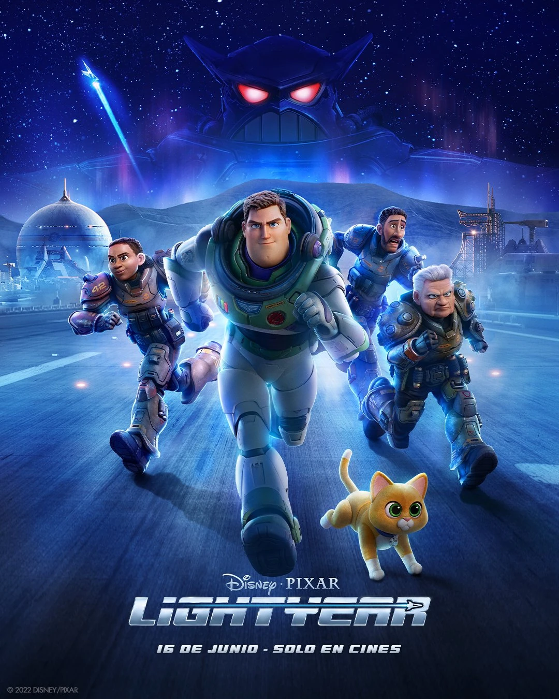

Reseñas
"Criticas" de esas peliculas y series que te interesan o no sabias que existian
Reseña de Lightyear de Disney/Pixar
Esta es la película que vio Andy en 1995 que hizo amar al personaje, tanto que después de verla le pidió a su mamá que le compré el juguete que da pie a Toys Story. La historia nos muestra a Buzz Lightyear, un guardián espacial, que está buscando un planeta donde habitar para toda una población que está en una nave nodriza. Con el está su compañera y amiga Alisha Hawthorne, qué se burla de él por describir todo a través de su bitácora. El planeta es sumamente hostil y no viable por eso; la huida sale male y quedan varados en el mismo.
Buzz se hecha la culpa de eso y busca la manera de remediar las cosas a través de viajes espacio-temporales: el primer viaje sale mal y para lo que el fueron 4 minutos para los demás fueron 4 años así hasta llegar a la fórmula de salir de ese planeta. Lo malo fue que perdió a gente que quería hasta caer con un enemigo desconocido, el Malvado Zurg. De parte de Disney es una jugada arriesgada de jugar con una película un poco (no tanto) más seria de ciencia ficción y con un guión bastante previsible en varios tramos de la cinta y que se estaca en el medio. Se disfruta la cinta pero no es para los más chicos ya que seguramente a los 10 minutos de la cinta se van a querer ir por lo que ven; está es la cinta que amo Andy? Seguramente se van a preguntar después de salir de verla.
Valoracion:7,5/10
